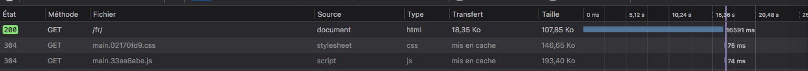
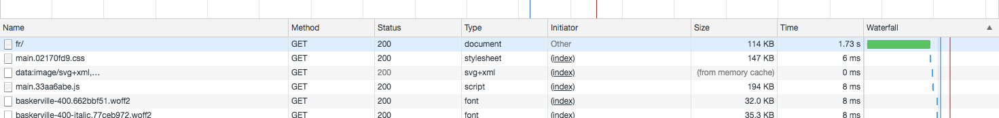
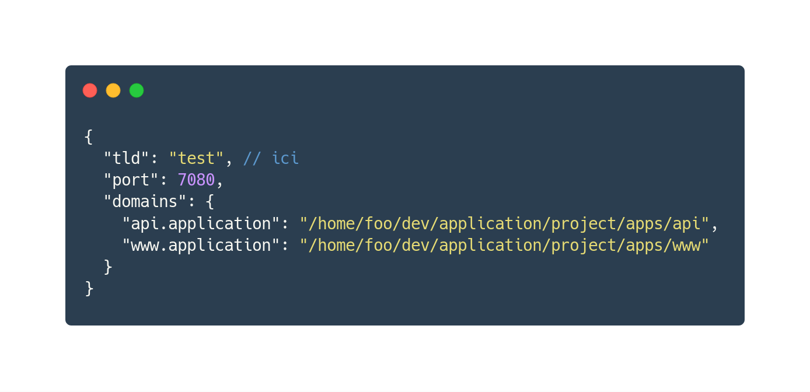

REX Symfony Binary
Baptiste Leduc

- 🐘 Développeur PHP ;
-
 AFUP ;
AFUP ; - 🏂 Wakeboard
- github.com/Korbeil
- twitter.com/Korbeil_
Qu'est-ce qu'il se passe ?
Docker, sur Mac, c'est lent.
Et je compte pas le temps de build, composer install ...
symfony/web-server-bundle 🤔
- Pas de nom de domaines
- Pas de https
- ...
Le binaire Symfony ! 😎
- (r)évolution du symfony/web-server-bundle
- Présenté à Lisbonne le 6 Décembre 2018
- Closed-Source et écrit en Go
Enfin un résultat agréable !
Et moi j'utilisais .test avant !
On peut changer ça dans le fichier ~/.symfony/proxy.json
PHP en local
- Devoir gérer sa version de PHP
- Installer les extensions !
- ⚠ php-xdebug
Et si j'ai plusieurs versions ?
- symfony local:php:list
- Fichier .php_version à la racine du projet
Mon API elle fait comment ?
https://github.com/Korbeil/pomdok 🍏
- Vérification de la compatibilité / installation
- Met à jour la configuration
- Start/stop de vos applications
- Gère le proxy
Mais du coup ...
Il faut indiquer aux apps qu'on passe
par un proxy: .env.local
HTTP_PROXY=http://127.0.0.1:7080/
HTTPS_PROXY=http://127.0.0.1:7080/
lien avec docker 😢 pas fou, on met les noms des containers dans le /etc/hosts …
Conclusion
- On a toujours Docker pour les services
- Docker reste présent pour Linux/CI
- Mais la qualité de vie a été grandement améliorée !
Aller plus loin ...
Questions 🎙